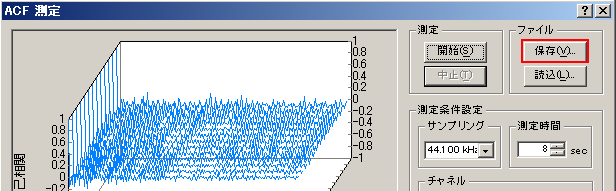
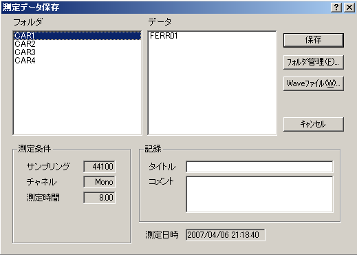
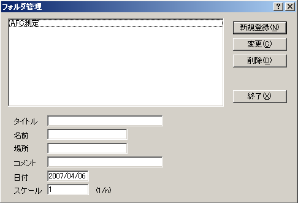

DSSF3 > RA > リファレンス > ACF/CCF測定


| 項目 | 説明 | |
|---|---|---|
| フォルダ | 測定データの保存先のフォルダが一覧表示されます。 | |
| データ | 選択したフォルダに保存されている測定データが一覧表示されます。 | |
| 測定条件 | 測定したデータの測定条件が表示されます。 | |
| 記録 | タイトル | 測定データに付けるタイトルを入力します。ここで入力したタイトルは、[データ]の一覧に表示されます。 |
| コメント | 任意につける情報です。不要であれば入力しなくても構いません。 | |
| 測定日時 | データを測定した日時が表示されます。 | |
| ボタン | 説明 |
|---|---|
| 保存 | 保存を実行します。 |
| フォルダ管理 | データを保存するフォルダに関して、新規作成，フォルダ名等のフォルダ情報変更，削除を行います。 →後頁で説明 |
| Waveファイル | データをWaveファイルとして保存します。 |
| 1. | 保存先フォルダを選択する： [フォルダ]リストボックスに並んでいるフォルダの一覧から、測定したデータを保存するフォルダを選択します。なお、保存先フォルダを新規に作成したい場合は、[フォルダ管理]ボタンで行います。 |
| 2. | データ名を入力する：[記録]の[タイトル]入力ボックスに、測定したデータのデータ名を入力します。また、必要に応じて[コメント]を入力します。 |
| 3. | 保存する：[保存]ボタンで保存を実行します。取りやめたいときは[キャンセル]ボタンをクリックします。 |

| 項目 | 説明 |
|---|---|
| （リストボックス） | 測定データの保存先であるフォルダが一覧表示されている。 |
| フォルダに関する情報 | |
| タイトル | フォルダ名。 |
| 名前 | 測定者。任意。 |
| 場所 | 測定場所。任意。 |
| コメント | 任意。 |
| 日付 | フォルダの作成日付。自動的に入る。 |
| スケール | 模型での測定の場合にそのスケール。 |
| 項目 | 説明 |
|---|---|
| 新規登録 | 2に入力した内容でフォルダを新規作成する。 1のリストに登録される。 |
| 変更 | リストボックスで選択したフォルダの情報(2)の変更を実行する。 |
| 削除 | リストボックスで選択したフォルダを削除する。 |
DSSF3 > RA > リファレンス > ACF/CCF測定